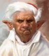
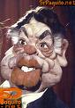
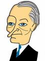

De: La Frikipedia, la enciclopedia extremadamente seria.
De: La Frikipedia, la enciclopedia extremadamente seria. De: La Frikipedia, la enciclopedia extremadamente seria.
| De la serie anatomía para todos: | |||
| Pie | |||
| |||
| Nombre científico | Callus apestosibus | ||
| Localización | por debajo de la cabeza | ||
| Función principal | dar sabor al queso | ||
| Función secundaria | ponerse uno delante del otro para mover a los seres jumanos | ||
| Aspecto general | feo de cohone | ||
| Número habitual | dos, tres u más | ||
| Vital / no vital | no es vital si tienes alas para volar | ||
| Nivel de frikismo | muy alto | ||
| Ejemplo de poseedor | Bigfoot | ||
Parte interior de un zapato. Recubierta de calcetín o media, dependiendo del género, básicamente actualidad como actores porno. El pie puede ir desprovisto de ambos envoltorios, pero en este caso atentaría contra la higiene según la vieja escuela pero sería txatxi molongui Juan Piruleta, según los fashiosos.
Utilizado como medio de locomoción más barato aunque el más cansado
Los pies se subdividen en tres partes:
|
|
|
|
Los pies suelen tener cinco dedos, menos en el caso de la madre de Tamara, Margarita Seisdedos. Sus nombres infantiles son conocidos como: este fue a por leña, este la cortó, este cogió un huevo, este lo frío y este pájaro gordo se lo comió. Pues si no te lo crees por que no has tenido tierna infancia dale aquí ves como es verdad su edad adulta evolucionan a índice: dedo de Colón, pulgar: para chafar pulgas, anular: para rascarse el ano,conocido también como el dedo negativo corazón: dedo sexual y meñique: para burrillas y cerumen.
Las extremidades del pie, están recubiertas por una capa dura semicircular denominada uña, dependiendo de su tamaño y curvatura, el individuo tiene mayor o menor agarre. Dependiendo de su suciedad es más o menos cerdo
Los pies se miden por tallas desde la 0 a la 60, aunque los de la 60 son difíciles de encontrar. Contrariamente al aparato genitaL masculino; polla o pene dependiendo de la región de origen, a nadie le encanta tenerlo enorme, básicamente por que no es comercial, y valen una pasta. Los chinos tienen las manos pequeñas y no dan al abasto con esos tamaños.
Los ingleses, seres de tez blanca y acento gibraltareño del Norte, lo utilizan como medida, equivalente a 0,28 metros, medida española de Nachovidales o italiana Roccosifredis, ambas desprovistas de uñas
Los pies son como los topos son ciegos, pero siempre saben dónde pisan. Cuando falla la vista:
|
|
|
El olor a pies es algo muy característico, se asocia al olor del queso, a pesar de que no exista ningún pie en forma de queso, sin embargo existen quesos en forma de teta, y no huelen a pies.
Los pies suelen tener un tacto fino y agradable, salvo en los que van descalzos, cuando te tocan hacen efecto lija.
Por el momento es desconocido ya que ningún bebe nos lo ha sabido describir. Los contorsionistas lo chupan por deformación profesional, pero no lo saborean. Durante un breve periodo de tiempo se pudo saborear el Frigo Pie, el único helado que se deshacía en tu mano y no en tu boca, siempre y cuando no se cogiera adecuadamente por el palo.
Los pies, oído no tienen pero pueden llegar a ser escandalosos. Según su naturaleza se dividen en:
|
|
|
Este campo de la ciencia, destina los siguientes especialidades a los pies:
|
|
|
|
|
|
|
|
|
|
|
Aroma Pie rapia |
Vómitos y somnolencia |
En el inicio de los tiempos estas funciones se asignaban a los dedos de la mano, pero gracias al yoga, taichi y la natación sincronizada, los dedos de los pies también pueden cumplir las funciones arriba mencionadas.
El primer homínido conocido es el Pie Tecantropo Erectus, es el primero que consiguió los 180º respecto al eje del suelo, de ahí proviene que ciertos órganos
Hasta la aparición de Satoshi Tahiri, creador de Pokemon, las teorías evolucionistas atribuían los pies al género humano. El famoso gusano de la familia Chilípoda, que no gili-poda, cansado de arrastrarse como un gilipollas,vaya que no era tonto, un buen día decidió salir por pies, y ya que era el mes de Enero y había rebajas, le pusieron 100. Científicamente no esta demostrado que 100 sea el número exacto y preciso. Pero nadie se ha parado a contarlos, más por asco que por respeto al bicho en cuestión
Los pies son de muchos tipos y entre los más destacados están los siguientes:
|
|
|
Nueva Guinea Piepua
| Imagen | Es | ¿Pero quien es? |
|---|---|---|
| *PieNelope Cruz | Española que fue americana y vuelve a ser española. Le gusta más el Jamón-jamón que la Mc.Cruise | |
| * Pies Brosman | Fue un Bond chico hasta que lo jubilaron |
| Imagen | Es | ¿Pero quien es? |
|---|---|---|
| *Isabel PieAntoja | Cantante folklorika enamorada de un presidiario malayo de Jaen aceitunero no altivo | |

|
* Jose Luis PieRales | Cantante melódico amante de las ratas de mar poéticamente conocidas como gaviotas |
| * Pies Shop boys | Grupo pop inglés conocido en España como los chicos de la tienda de los pies, vaya que trabajan en una zapatería |
| Imagen | Es | ¿Pero quien es? |
|---|---|---|
|  | * PieNedicto 16 | Accionista del Vaticano su última actuación fue de espaldas al accionariado |
| Imagen | Es | ¿Pero quien es? |
|---|---|---|
| * FeliPie el Hermoso | Primer rey friki casado con Juana la Loca | |
|  | * Feli Pie Gonzalez | Presidente de las post-transición amante de la demagogía y la acritud |
| Imagen | Es | ¿Pero quien es? |
|---|---|---|
|  | *Josep PieQue | Político catalán del PP antes AP(prohibido bromas en pre-campaña) |
Autor(es):